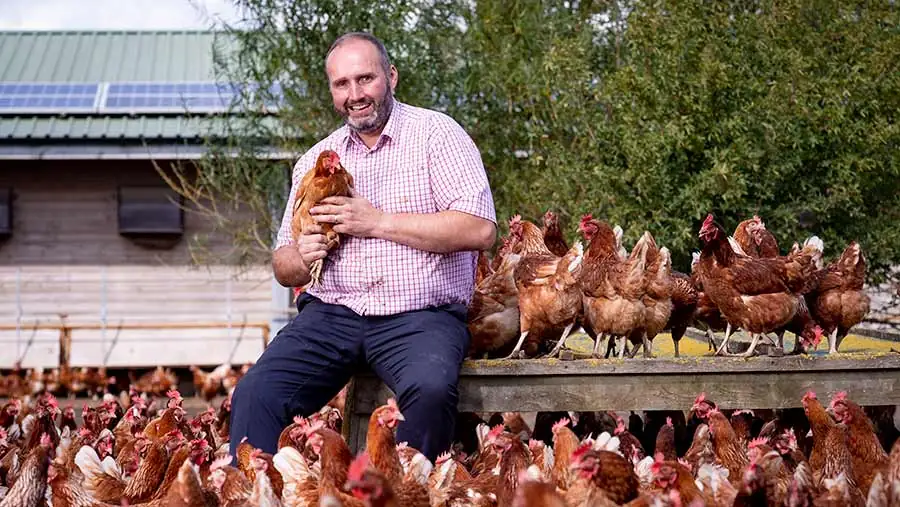
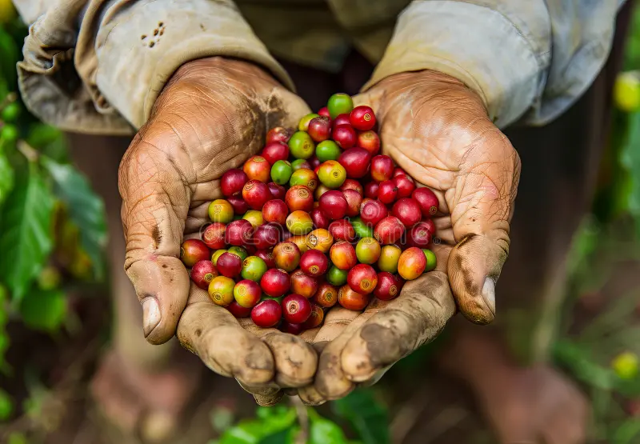

Recent activities:
Your Impact at a Glance
Meals Served (Between 2019 and 2025)
Houses Built (Between 2019 and 2025)
Worth of Aid Distributed
Aid Containers Shipped

Breaking the Cycle of Hunger and Poverty
Building Food Security &
Sustainable Livelihoods
For 1 in 4 parents in Latin America—especially those living in poor remote areas—breaking the cycle of deprivation begins at home, where families often lack reliable access to food, adequate shelter, and stable income. Many are pushed into survival mode—hungry, stressed, and forced to make impossible choices: sacrificing their own meals so their children can eat, or deciding between food, medical care, and school supplies.
Poverty is a vicious cycle that extends far beyond a lack of income. Limited resources make it difficult to meet basic needs such as food, clean water, shelter, and healthcare, leading to hunger and poor living conditions. In turn, chronic illness and undernourishment reduce the ability to work or learn, limiting future opportunities.
The LIFT (Livelihoods Improved Through Food Security and Training) program is a scalable, community-driven model that promotes sustainable food security and economic empowerment. Through the introduction of small-scale, locally produced nutritious food using climate-smart agricultural practices, participants are equipped to improve household food security while adapting to environmental challenges. The program also provides advanced skills development through Farmer Field School training, enabling farmers to adopt improved production techniques, strengthen their livelihoods, and increase resilience. By building local capacities and creating sustainable sources of income and nutrition, LIFT aims to deliver lasting solutions that reduce poverty and help communities thrive in the face of future challenges.
Donate a LIFT Starter Kit
Empower Families to Thrive
Revitalize Poor Communities
LIFT starter kits provide families with the essential tools, seeds, and resources needed to begin producing their own food. These kits are designed to jumpstart self-sufficiency, helping households move from immediate need toward sustainable food security.

Family gardens and animal husbandry are the starting point for food security in remote communities. By helping families grow vegetables, raise chickens or goats, households gain reliable access to nutritious food and improve daily diets. Across communities in Honduras, Guatemala, El Salvador, and Haiti, families are producing fresh vegetables, raising livestock, farming fish, and keeping bees—reducing hunger while building dignity and self-reliance through local food production.
As families gain skills and confidence, impact expands through seeds-to-market initiatives that strengthen local economies. Farmers in Peru are growing cacao, communities in Colombia are cultivating plantain and blackberries, and producers in Honduras are raising livestock and managing shrimp and fish farms. These initiatives help farmers increase yields, diversify crops, and bring surplus products to local and regional markets—creating stable income alongside improved food availability.
Together, these efforts revive communities and entire regions while helping families build a future where they live. By creating reliable food systems and local income opportunities, communities are better able to remain rooted rather than being forced to migrate to overcrowded cities in search of survival—a cycle that often deepens urban poverty. From beekeeping in Honduras and Haiti to vegetable, livestock, and fish farming in El Salvador, integrated agriculture programs secure food, improve nutrition, generate sustainable income, and help stabilize families and communities for generations to come.